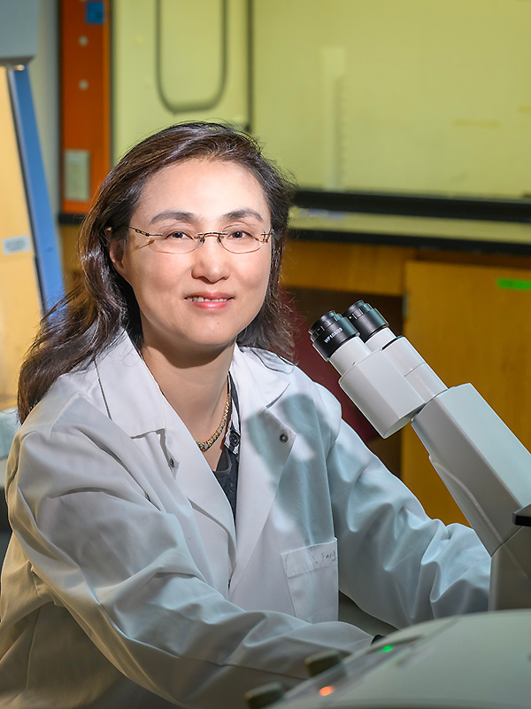

SU
Dr. Saurabh Umrao
Veterinary Research Specialist
usaurabh@illinois.eduMeet the people advancing virology, vaccines, and diagnostics in the Fang Lab.

Distinguished Professor in Diagnostic Test and Vaccine Development
Professor of Virology · Department of Pathobiology
College of Veterinary Medicine
University of Illinois Urbana-Champaign
Affiliated with the Carl R. Woese Institute for Genomic Biology.
Scientific co-director, Center for Zoonoses Research.
Executive Director, NAPRRS/NC229 International Conference of Swine Viral Diseases.
Prof. Fang’s professional background spans South Dakota State University, Kansas State University, and Illinois.
Academic training →
Scientific contributions →
Commercialized technologies →
Publication record →
2005 · Assistant Professor
Center for Infectious Disease Research and Vaccinology, South Dakota State University
2011 · Associate Professor
South Dakota State University
2013 · Associate Professor
Kansas State University
2016 · Full Professor
Kansas State University
2019 · Full Professor
University of Illinois Urbana-Champaign
2026 · Inaugural investiture
Diagnostic Test and Vaccine Development professorship at Illinois
2025 · Dr. Gordon and Mrs. Helen Kruger Research Excellence Award
2024 · Fellow, National Academy of Inventors
2023 · Zoetis Animal Health Award for Research Excellence · University of Illinois Urbana-Champaign
2017 · Zoetis Animal Health Award for Research Excellence · Kansas State University
2013 · Distinguished Researcher Award · South Dakota State University
2009 · Intellectual Property Commercialization Award · South Dakota State University
2005 · Dean’s Research Award · South Dakota State University
2004 · Research Paper Award · Society of Sigma Xi, South Dakota State University chapter
2003 · Graduate Student Travel Award · South Dakota State University
2000 · VIIIth International Nidovirus Symposium Travel Award
1999 · Research Proposal Award · Society of Sigma Xi, South Dakota State University chapter
1996 · Professional Advancement Grant Award · Iowa State University
Background and recognition follow the Illinois faculty profile , reviewed November 8, 2026.
Veterinary Research Specialist
usaurabh@illinois.eduFang Lab
Fang Lab
Fang Lab
Fang Lab
Fang Lab
Fang Lab
This draft combines the team listed on the existing lab website with Dr. Umrao’s confirmed appointment. Member roles, new arrivals, and alumni can be updated after lab review.